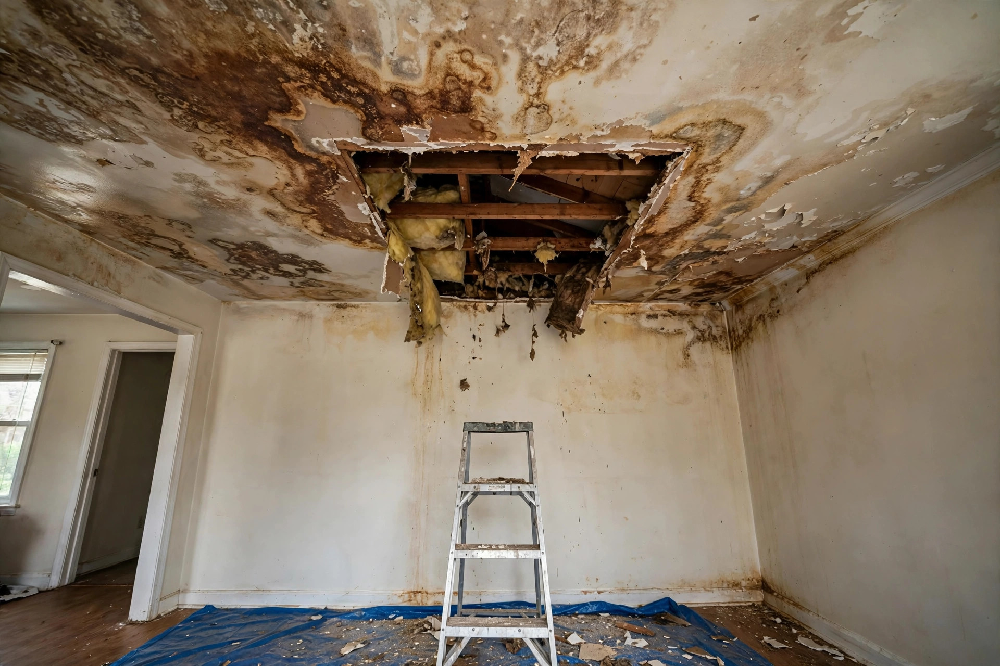

Home / Water Damage / Ceiling
Meridian, Idaho · Overhead leaksA stained ceiling is a message from upstairs
Ceilings don't leak on their own — something above is sending water down. Repair means finding that source, drying the cavity, and rebuilding the ceiling to disappear into the room.
Where ceiling water comes from in Meridian
Upstairs bathrooms
The number one source. A failed wax ring, a cracked shower pan, or a sweating supply line drips into the ceiling cavity for weeks before the stain appears below. Meridian's two-story homes stack wet rooms over living spaces by design.
Roof penetrations
Vent stacks, skylights, and chimney flashing work loose over time. Meridian's freeze-thaw cycles pry at sealants each winter, and spring rain finds the gap.
HVAC condensation
Attic air handlers sweat in summer. A clogged condensate drain overflows the pan and soaks the ceiling below — often mistaken for a roof leak.
Ice dams
Less common than in colder climates, but Meridian's cold snaps can back water under shingles at the eaves. The stain shows up on the ceiling near exterior walls.

Reading the stain
What the ceiling tells you before anyone opens it.
Yellow-brown rings
Classic dried water stain. The leak may be old or intermittent — the rings mark each wetting cycle like tree rings.
Sagging or bubbling
Active saturation. The drywall is holding water weight right now, and the tape joints are letting go. Don't press on it.
Dripping
Water is moving through the cavity in real time. Buckets help, but the source above needs shutting off — call immediately.
The repair sequence
- Stop the source — plumbing shutoff, roof tarp, or drain clearing, whatever the leak demands.
- Map the spread — moisture meters trace how far water traveled inside the cavity beyond the visible stain.
- Open and dry — saturated drywall and insulation come out; the cavity dries with targeted airflow.
- Rebuild — fresh board hung, joints taped, texture blended to the room, then primed and painted.
- Verify — final readings confirm dry before the texture goes on. Wet drywall under fresh paint is a mold nursery.
A Tuscany hallway with a growing halo
A faint yellow ring appeared on the hallway ceiling below the kids' bathroom. Over three weeks it doubled in size, then began to sag. The culprit was a shower drain gasket that had shrunk with age, letting every shower send a trickle into the cavity. The fix was a two-foot square of new drywall — but only after the plumber replaced the gasket and the cavity dried for three days. The stain was the symptom; the gasket was the disease.
Sources: EPA — Mold, Moisture & Your Home
Preventing the next ceiling stain
Check upstairs plumbing yearly
Look under sinks, around toilets, and behind washing machines for slow drips. A five-minute check catches the seeps that become ceiling stains.
Keep gutters clear
Overflowing gutters push water behind fascia and into soffits, where it travels inward to ceilings. Meridian's fall leaf drop makes this a seasonal chore.
Service the AC drain
Attic air handlers produce gallons of condensate on hot days. A yearly drain-line flush prevents the overflow that soaks ceilings below.
Watch the roof after wind
High-wind events lift shingles and flashing. A quick visual check from the ground after storms spots trouble before rain finds it.
Ceiling leak questions, answered directly
Can you just paint over the stain?
Stain-blocking primer covers the color, but paint over wet or moldy drywall fails fast. The cavity has to be dry and clean first — then paint makes it disappear properly.
Will the texture match?
Meridian's newer homes mostly use orange-peel or light knockdown textures. A skilled taper blends the patch so the repair is invisible after paint. We match before we paint, not after.
Is a sagging ceiling dangerous?
It can be. Saturated drywall is heavy, and it can let go without warning. Keep furniture and people clear underneath, and don't poke at it — call and we'll assess.
How do you find a leak you can't see?
Moisture meters, thermal imaging, and sometimes a controlled water test from above. We trace the wet path backward to the source rather than guessing.
Does the whole ceiling need replacing?
Rarely. Water damage is usually localized to the wet path. We replace what's saturated and blend into what's sound — full ceilings only when the damage is truly widespread.
Stain growing? Don't wait for the drip.
Call and describe the ceiling — we'll tell you what it likely means.